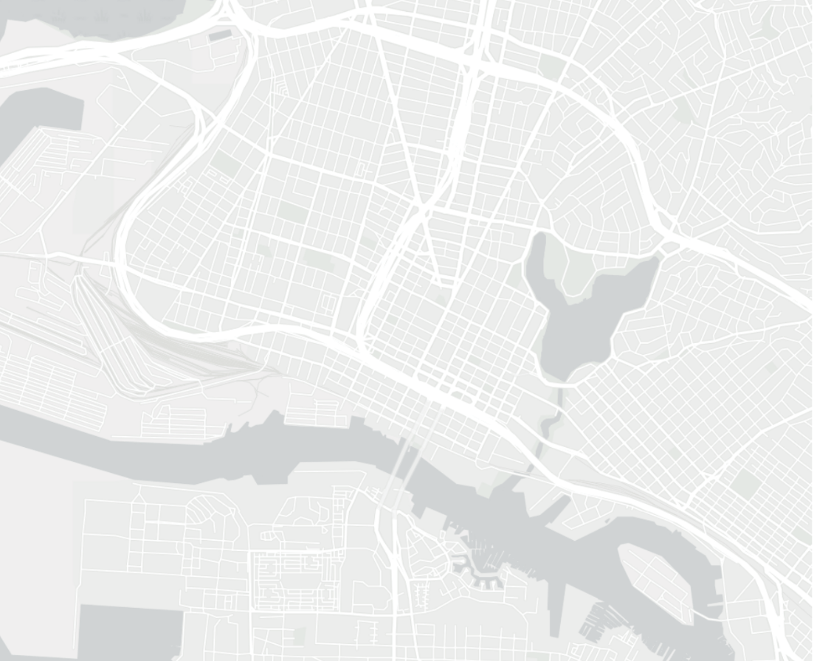

Thanks for visiting
my portfolio —
Crafting Resilient Cities with Innovative Design & Planning
As a driven undergraduate at UC Berkeley's College of Environmental Design, I merge my passion for sustainable environmental design with a keen focus on city planning and geographical information systems.
Environmental Design —
UC Berkeley
Featured Projects

Northern California
Bay Area
Critical Infrastructure

Oakland, CA
Economic Vitality of Elmhurst Corridor